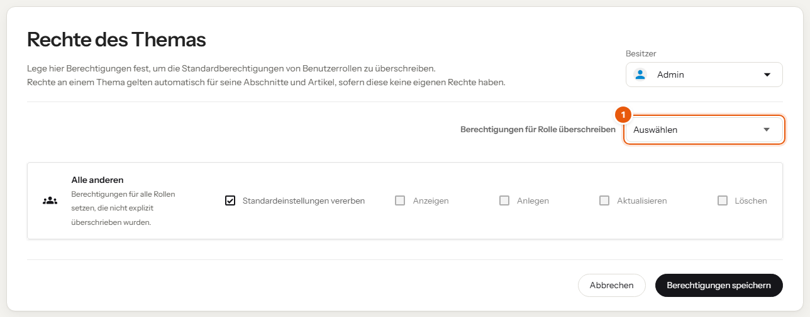

Rechte sorgen dafür, dass Kundenwissen nur bei denen landet, die es brauchen, und dass alle anderen trotzdem ungehindert schreiben können.
Alle Bereiche und Themen. Zuständig ist die Redaktion.
| Bereich | Mitarbeiter | Azubi |
|---|---|---|
| Kunden | kein Zugriff | nur freigegebene Themen lesen |
| Anleitungen & Technik | lesen, anlegen, bearbeiten | lesen, anlegen, bearbeiten |
| Prozesse & Richtlinien | lesen, anlegen, bearbeiten | lesen, anlegen, bearbeiten |
| Ausbildung & interne Tools | lesen | lesen |

Im Bild: (1) hier wählst du die Rolle, deren Rechte du für dieses Thema festlegst.
Die Freigabe gilt für alle Azubis, nicht für eine einzelne Person. Wenn nur eine Person Zugriff haben soll, klärt das mit dem Admin.
| Rolle | Aufgabe |
|---|---|
| Redaktion | setzt und prüft Rechte an Bereichen und Themen |
| Admin | pflegt die Rollen selbst und die Zuordnung zu den wiki-Gruppen |
Gültig ab: Einführung des Wikis
Nächste Überprüfung: halbjährlich, zusammen mit den wiki-Gruppen